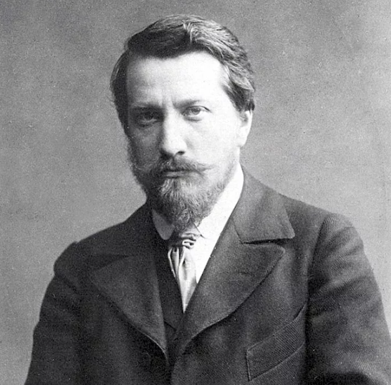

Валентин Александрович Серов родился в 1865 году в Санкт-Петербурге, в семье композиторов Александра Николаевича Серова и Валентины Семёновны Серовой (урождённой Бергман). Его прадедом (со стороны отца) был естествоиспытатель Карл Иванович Габлиц.
Летом 1869 года Валентин Серов впервые выехал с родителями за границу.